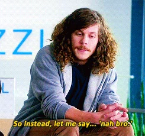
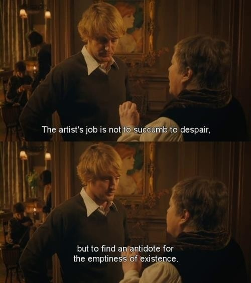
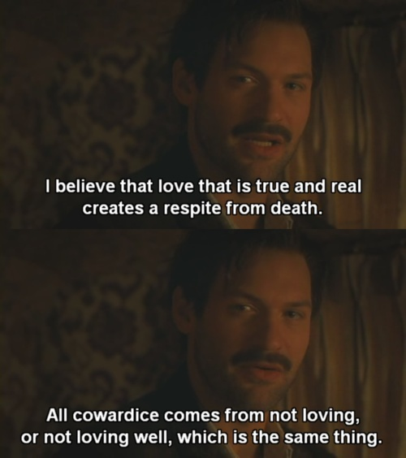

Roads go ever ever on,
Over rock and under tree,
By caves where never sun has shone,
By streams that never find the sea;
Over snow by winter sown,
And through the merry flowers of June,
Over grass and over stone,
And under mountains in the moon. . .
† † †
0. Prologue
This is the story of the road that led me to
LaunchCode. Like all good
stories, there is conflict, betrayal, growth, and of course, romance.
Yet, this is not a typical adventure story; there is no monster lurking
in a dark dungeon, no enemy horde pounding at the
city gates, no great destiny to fulfill, and the hero's journey is not
for a grand quest for treasure or glory. The villains of this story are
vices, in particular, despair and blindness of mind, and the hero's
quest is for what Aquinas called "the theological virtues"---faith,
hope, and love. Nevertheless, it may be a tale worth telling.
1. Fiat Lux
As a kid, I did a lot of reading. I mean
A LOT of reading. It was not unusual for me to finish
an entire 400-500 page book in a day during the summer. Both of my
parents worked at my school, so I was stuck there even over breaks
---the gym and the library were my only options to pass the
time (it's simple math: a modest income / five kids = no GameBoy).
Likely as a result of this, when I started at Baylor University in
fall 2010, I decided to major in English.
At the time, Baylor required all honors program
freshman to sign up for a first year seminar (essentially, a small,
one semester course on a special topic). I grew up reading a lot of
C.S. Lewis, so I chose
to take a course called "The Philosophy of C.S. Lewis." The course was
taught by a smart, passionate philosopher trained in the
analytic
tradition, which
puts a heavy emphasis on careful definition of terms and
precise, logically valid formulation of arguments. As someone with no
background in logic at the time (beyond the proofs we all had to do in
high school geometry) I was deeply impressed by the clarity and force
of my professor's arguments. Perhaps the more so because these
arguments were often employed in the systematic destruction of my
crude Evangelical Christian worldview (but that's a thread of this
story that I must leave off the loom for now, for the sake of space
).
However, it wasn't only the clarity and power of
logical argument that gripped me; I found the topics of the course
fascinating as well---what could be more interesting than thinking
about the existence of God, free will, the nature of morality and
rationality, and the (im)materiality of the mind? I quickly decided
that what I had always been attracted to in English was the
exploration of philosophical issues such as these. Moreover, I was
growing tired of the way novelists often raised questions without
proposing answers. Especially now that the worldview I had grown up
with had been shattered, I wanted answers---and I was convinced
studying philosophy would provide them.
† † †
Roads go ever ever on, Under cloud and under
star. Yet feet that wandering have gone Turn at last to home
afar. Eyes that fire and sword have seen, And horror in the
halls of stone Look at last on meadows green, And trees and
hills they long have known.
† † †
2. Riddles in the Dark
My first course as a philosophy major was Intro
to Logic and I loved it. Amidst the truth tables, Venn diagrams,
and syllogisms, I was at home. I was convinced that this was the
path for me. Further courses in more advanced logic, philosophy of
mind, free will, metaphysics, and ethics sealed the deal.
But I was starting to realize that the answers
I was after would take a lot longer than four years to find. The
more I learned, the more I realized the vast extent of my
ignorance. Worse still, the very
goals and methods of philosophy are themselves a subject of
serious dispute among philosophers. I became confused even about
how to go about finding the answers to philosophical questions,
in addition to being confused about the answers. The clarity and
certainty that I
had hoped for began to seem farther off than when I'd begun
studying philosophy. In fact, I gave up on ever achieving certainty.
Or at least, I told myself that I did. I think below the surface,
I was still driven by a sense that if I just kept studying, I'd
figure it all out, I'd know what to do, and I could finally go
about the real business of doing whatever it was I was
supposed
to do. Whatever my reasons, I felt compelled to continue studying
philosophy in a formal setting. I somehow felt that anything else
would be a betrayal, would show that I was a phony or that I
didn't really care about getting to the truth on
life's big questions. Thus, I decided to go for my PhD.
Since my then girlfriend (now wife) had gotten
a job in St. Louis, I applied to PhD programs in philosophy
here in the Lou. WashU was my first choice, but they waitlisted
me . . .
. . . and left me
there the whole application cycle:

Luckily, SLU
accepted me and I started there in fall 2015.
† † †
The Road goes ever on and on Down from the door where it
began. Now far ahead the Road has gone, And I must follow, if
I can, Pursuing it with eager feet, Until it joins some
larger way, Where many paths and errands meet.
† † †
3. Midnight in Saint Louis
3.1. Despair
My time at SLU started well. I loved learning
modal logic and I felt like my mind was
running in high gear after every seminar. My favorite moment of
the day was walking home after classes, the city bathed
in the golden light of the setting sun and a stream of new ideas
pouring through my mind in rapid succession.

Yet beneath my pursuit of philosophy were fault
lines constituted by false assumptions and unhealthy motives; soon,
the effects of these fault lines began to show on the surface.
For one thing, the academic life was not what I had thought it would be.
Instead of spending my time learning about interesting subjects
through deep discussions with friends, I found myself sitting
alone, reading about
technical issues seven steps of abstraction removed from
anything I cared about and learning next to nothing. The reasons
for this are a complex of hyperspecialization and the publish-or-
perish atmosphere, which have the effect that people think about what they can publish
on, not what they care about; that people can rarely have
productive conversations, as even other philosophers likely don't
have a sufficient grasp of one's area of research to speak
meaningfully about it; and that one must read and write so much,
that it is difficult to maintain one's health and friendships.
Magnifying all this is a professionalized culture in the discipline
in which everyone reads a few big names, while the work of most
goes unread and unappreciated. Since the undergrads one teaches
by and large do not care about the subject, this means that for
most academic philosophers, most of their work seems to them to
be either underappreciated (leading to bitterness) or unworthy
(leading to low self-worth). I felt like I was
spinning my wheels, only digging myself deeper in a hole of doubt
and confusion, multiplying and sophisticating the questions, but
getting no closer to answering them---and on top of this entering
a career that promised only a pathetic and miserable obscurity.
All this was compounded by a serious case of imposter syndrome,
my best friend and climbing partner moving away, and my wife also
being in a graduate program. Taken together, these factors led me
to a very dark place. I woke up every day and hoped I'd
be sick so I could just stay home. I tried to avoid seeing anyone
from my department. I struggled to break out of negative patterns
of thought and felt like a complete failure. I felt like my life
was falling apart and I had a hard time believing things would
ever get better.
3.2. And Back Again
Sometimes we have to hit rock bottom before we can give up
some of our false beliefs about what matters in life, or even
recognize that we have them sometimes. I finally got to the
point where I knew something had to give and I had to admit
to myself that my pursuit of philosophy was not a noble
pursuit of truth for truth's sake. I was pursuing certainty
out of fear of being wrong about the important questions in
life. I was pursuing an unconquerable rational defense of my
beliefs out of a fear of being embarrassed again. I was
pursuing understanding, yes, not for its own sake, but for the
sake of feeling intellectually superior and for the sake of
having something that others might want. And in part, I was
pursuing the respect and recognition of the elders of my
tribe so to speak. Boys generally crave validation from the
established men in their community, which in my case meant
the better professors in the philosophy department. This
natural tendency was ramped up in me because I did not have
a great relationship with my father (he was not an alcoholic
or abusive or anything---just critical and hard to connect
with). Because I so craved recognition from the professors
whom I admired, I felt I had to become an excellent
philosopher. Somehow, I thought that if I did something else
with my life, and especially, if I quit grad school, I would
be letting them down and losing their respect. This is, of
course, silly. They all recognize that professional
philosophy is not for everyone and that there are many other
good lives and (far more) useful professions. Moreover, they
probably barely remember me and wouldn't give it a second
thought if they heard that I quit!
As I said before, I experienced a radical shift in
perspective, which had two causes. The newfound insight into
my own mind was the first, but that took quite a while to
come to light---in fact, I am still discovering some of
this as I write. As I was developing this insight, I was
also being changed by the love of my wife and her family.
My wife. . .

the rigors of graduate work, the isolation of
moving to a new city, and the toxic atmosphere of academia began to
take a serious toll. I had so much reading to do, that I felt I
didn't have time to exercise, which meant that I had no healthy way
of dealing with stress, and, since I didn't attend church, it meant
that my primary way of making and developing friendships was gone.
The graduate school was my only source of community and the other
students were also extremely busy and largely did not share my
interests. So, I was holed up alone, reading and writing all day,
every day. To make things worse, the job market for philosophy PhDs
is abysmal, so there is incredible pressure to
publish while in graduate school and to impress professors, so they
will want to advise your dissertation and write you a sparkling
recommendation. This, combined with the lack of community and my
innate perfectionism and insecurity, made me feel like I needed to
get everything right and develop genuinely new and insightful views
in all of my papers and never say anything wrong or ask any stupid
questions. Unsurprisingly, this made it very difficult for me to
get to know my professors and to write my papers and to participate
in class discussions. And of course, this only led me to feel more
self-conscious, more isolated, and so more pressure to perform. It
was a truly sick cycle. Worse still, I was thrown into teaching my
own course my freshman year with very little training or support.
So the guilt of failing my students and being a terrible teacher,
plus the extra work of writing (and practicing) lectures and grading
was thrown into the mix.
About two years into my graduate program, I began to realize that
the academic life was not for me. I didn't have the scholar's
drive to devote my life to giving a systematic answer to a small
question. I didn't even enjoy teaching philosophy, at least as it
is done in the university setting. And I had begun to think about
things not from the unencumbered and uncommitted position of a
single person with no debt and no real relationship with his
family, but from the pressing position of a husband, a future
father, and a member of a real, loving family. My wife's family
took me in as their own and showed me what a beautiful thing a
good family is. I had come to see that much of what I was seeking
in philosophy was trying to fill a relational or communal void in
my life and also that the sort of career I could plausibly look
forward to in academia (if any) would not allow me to live up to
my duties as a member of my wife's family, nor would it allow me
and my wife to achieve our desires for our own family. We felt we
would need to contribute to the care of some of the aging members
of her family in the near future, and we wanted to raise our
kids around their extended family. Thus, we realized that we
needed a better income and more control over job location than a
career in philosophy could promise. So, I began exploring other
options. Law was a logical shift, as the skills of analysis and
argumentation that one learns in philosophy directly translate to
the practice of law.
But I knew a couple of people who work in
software engineering, one of whom left philosophy to do so, and
they encouraged me to look into coding. The more I learned about
what coding involved, the more interested I became. Now that I've
been learning to code for a few weeks, I am hooked. I love the
concreteness of functions and programs. They work or they don't.
And if they don't, you know there is a way to fix them. And
everything is so logical and so useful. The definitiveness, the
ability to test my work, and the utility of the work makes coding
deeply rewarding.
4. What Lies Ahead
After completing LC101, I'm hoping to get placed in an
apprenticeship in Saint Louis, that turns into a real job for
the next year. I still want to go to law school after that,
but I have become convinced that the legal field is on the
brink of being revolutionized through software. I think the
legal tech field holds promise of
financial reward, stimulating work, and the chance to make the
world a significantly more just place. So, I'm hoping that I
get to keep coding and help bring cheaper
and better legal service to more people.
The journey to this place was difficult,
painful, and disorienting, yet full of beauty and insight
and growth---that is to say, it's been an adventure. And
like all great adventures, you never know exactly what lies
ahead.
† † †
The Road goes ever on and on
Out from the door where it began.
Now far ahead the Road has gone.
Let others follow, if they can!
Let them a journey new begin.
But I at last with weary feet
Will turn towards the lighted inn,
My evening-rest and sleep to meet.
Still 'round the corner there may wait
A new road or secret gate;
And though I oft have passed them by,
A day will come at last when I
Shall take the hidden paths that run
West of the Moon, East of the Sun.